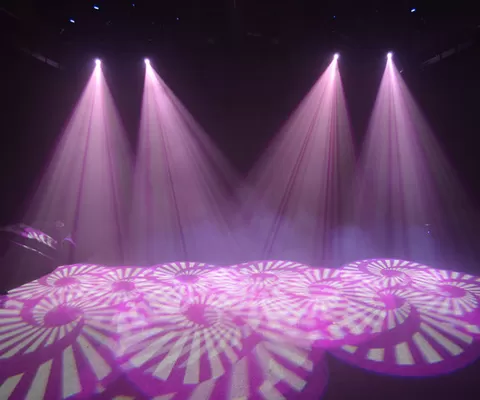
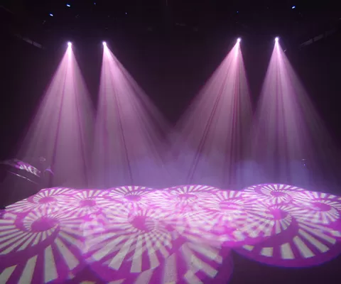
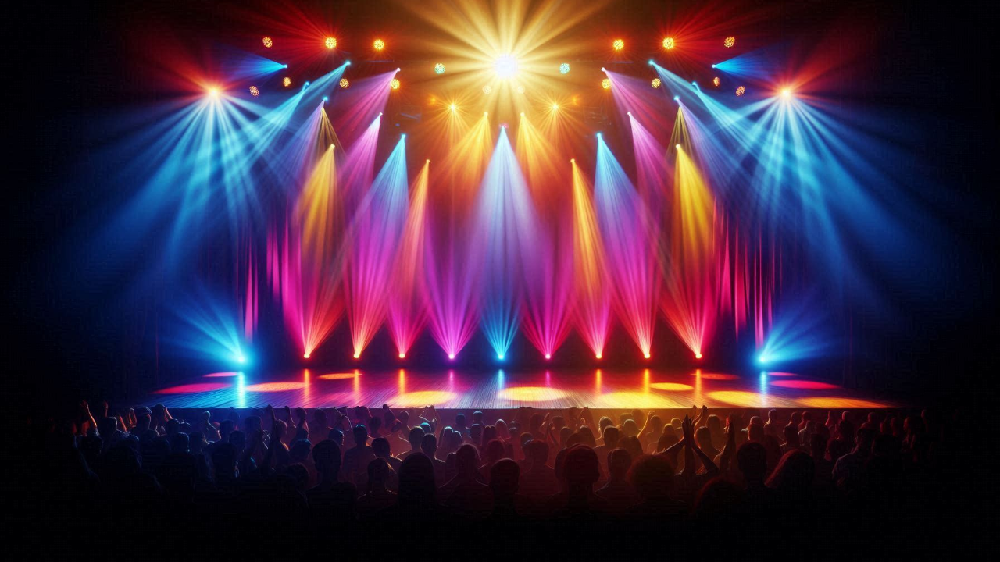
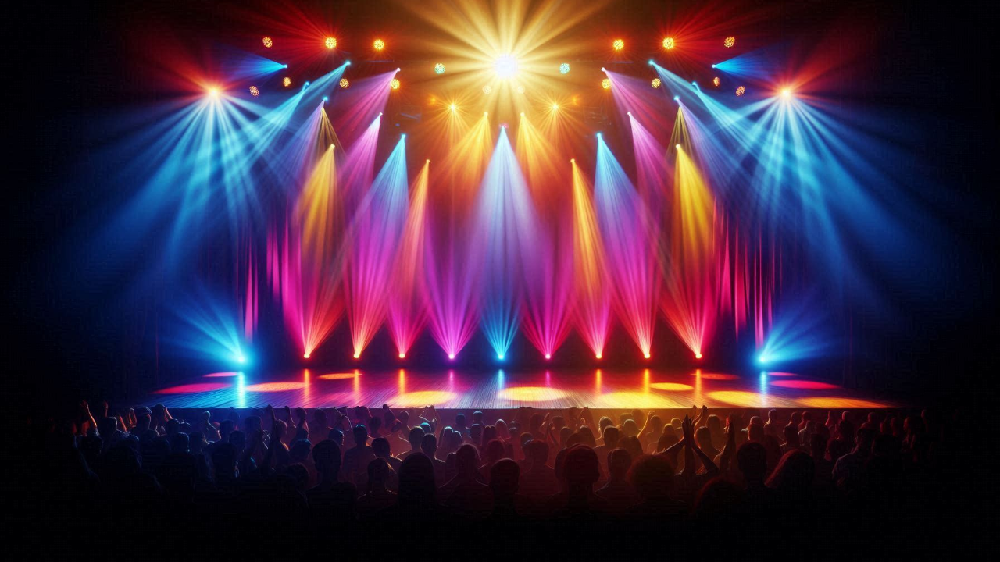

What Are Gobos?
A gobo, short for "GOes Before Optics," is a stencil, template, or metal/glass insert placed inside or in front of a lighting fixture to shape the light it emits. Instead of just casting a simple circle of light, a gobo lets designers project patterns, logos, textures, or scenes onto surfaces like walls, floors, or backdrops. Gobos are often used in theater productions, concerts, weddings, and corporate events to enhance visual appeal and add branding.
How Are They Made?
Steel gobos are tough and inexpensive but may need small bridges in the design to hold parts together. Glass gobos allow for more detailed images and can include multiple colors. Plastic gobos are sometimes used with LED lights for lower-heat situations. Designers use gobos to create atmosphere, simulate environments (such as trees, windows, stars, or fire), or highlight important themes and branding in a show.
 

Gobos in Chauvet Fixtures
Chauvet is known for producing quality lighting equipment with impressive features, and gobos play a significant role in making many Chauvet fixtures versatile. Many of Chauvet’s moving head and spotlight fixtures have built-in gobo wheels that come preloaded with several pattern options and often allow for interchangeable gobos. This means users can swap out standard designs for custom patterns, company logos, or creative visuals tailored to a specific event or production.
Chauvet’s advanced models often feature
Rotating gobos: Which spin the projected image, creating a dynamic motion effect.
Indexed gobos: Which can be precisely positioned for consistency and professional finish.
Morphing gobos: Which blend or transition between patterns, adding an extra layer of visual depth.
Gobo shake effects: For a jittery or vibrating image that adds intensity or movement to a scene.
Synchronization
In concert lighting, these effects can be synchronized to music for powerful visuals. In theater, gobos help set the scene or enhance storytelling. For corporate events or weddings, they project names, logos, or monograms with clarity.
Whether you’re designing for a live concert or a formal gala, Chauvet’s gobo-equipped fixtures offer a flexible toolset for transforming any venue into a visually engaging environment.
 
